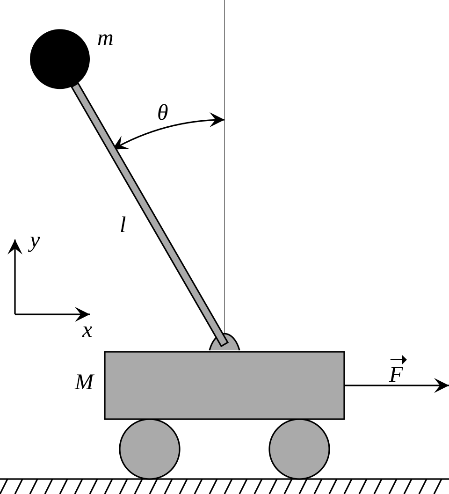

Recap: the model is trusted — now close the first loop
10′
00:10
Block A — PID, the cascade, the inner-loop derivation
40′
00:50
Second-order intuition + live tuning widget
15′
01:05
Block B — the hardware layer: two worlds, signs, seven fixes, tuning method
30′
01:35
Break
10′
01:45
Lab briefing — Lab 2 (★ graded)
10′
01:55
Lab session: the inner attitude loop + two of the seven fixes
55′
02:50
Debrief + milestone board
10′
Recap → today
From a model to a flying machine
Wk 2–3: the 12-state nonlinear model \( \dot{\mathbf{x}}=f(\mathbf{x},\mathbf{u}) \).
Wk 4: hover trim & the linearized \( (A,B) \) — and its unstable poles.
Today: the first feedback loop that tames those poles — attitude control.
The whole course in one line:
open loop ⇒ the quad tips over. The job of control is to make the unstable plant track what we ask.
Learning objectives
By the end of today you can…
State the PID control law and what each term does — and its failure modes.
Explain the cascade architecture: slow outer position loop, fast inner attitude loop.
Derive the inner attitude loop: attitude error → body torques.
Predict response from gains via \( \omega_n,\ \zeta \) — and tune them.
Lab Implement the inner loop in StudentController and stabilize a tilt.
History, in one minute
PID is older than control theory
1911 — Elmer Sperry's gyroscopic ship autopilot: proportional plus a crude derivative, built from gears.
1922 — Nicolas Minorsky publishes the analysis, having watched helmsmen: they steer on error, on accumulated error, and on how fast the bow is swinging. The three terms were reverse-engineered from human behaviour.
1942 — Ziegler and Nichols publish tuning rules, and PID becomes an industrial standard.
Today — still the majority of deployed control loops worldwide, and the inner loop of nearly every drone in flight right now.
Why the old thing survives.
PID needs no model. Every method after it in this course buys performance with knowledge — LQR needs \( (A,B) \), MPC needs a predictive model. When you have neither, PID still flies the aircraft.
That is not a consolation prize. It is why your team's aircraft will fly on PID in Week 10, and why the intelligent methods must earn their place against it.
Why attitude first
A quad is underactuated
4 motors → 4 controls: total thrust \(T\) and 3 body torques \( \boldsymbol{\tau} \).
But 6 DOF to place (position + attitude). You cannot push sideways directly…
…you tilt, then thrust. So horizontal motion is a consequence of attitude.
⇒ Attitude is the inner, fastest loop. Everything else rides on it.
Control wrench (what your controller returns):
\[ \mathbf{u} = \begin{bmatrix} T \\ \tau_x \\ \tau_y \\ \tau_z \end{bmatrix} \]
The simulator mixes this into 4 motor thrusts and saturates them for you.
Mental picture first
You already know this problem from a broomstick

The cart–pendulum: keep an unstable stick upright by moving its base. Replace the cart's force with rotor torques and the stick with the airframe — same problem, same medicine. Diagram: Krishnavedala, Wikimedia Commons, CC0.
Balancing a broom on your palm: you watch the angle, and you react to the rate it's falling — congratulations, your hand runs PD control at ~10 Hz.
The quad's attitude problem is this, rotated: unstable equilibrium, one fast actuator, feedback or fall.
The JiangXie inverted-pendulum kit (teaching-resources) is literally this picture with an encoder — its two-loop solution is our Wk-5 + Wk-6 cascade in one dimension.
The tool
PID in one slide
\[ u(t) = \underbrace{K_p\, e(t)}_{\text{now}} \;+\; \underbrace{K_i\!\int_0^t\! e\,d\tau}_{\text{past}} \;+\; \underbrace{K_d\, \dot e(t)}_{\text{future}}, \qquad e = x_{\text{ref}} - x \]
P — stiffness; pulls toward the target. Too high ⇒ oscillation.
D — damping; resists velocity. Tames overshoot; amplifies noise.
I — kills steady-state bias (gravity, wind). Too high ⇒ windup.
For attitude we use mostly PD: the rate term \(K_d\) is our damping, and
there's little steady bias on angle. Integral comes back on altitude next week.
The tool · drawn
PID as a machine, not a formula
Three parallel views of the same error — present (P), accumulated past (I), predicted future (D) — summed into one actuator command.
Your turn (60 s) — cover the diagram: which branch causes windup? which amplifies gyro noise? which fights steady bias? (I · D · I — if any answer surprised you, re-read the box on the previous slide before the lab.)
First principles
What a feedback loop is, before any letters
Error in, correction out, physics closes the circle. Everything else this term is a different box in the middle.
Measure where you are. Compare with where you want to be. Act in proportion to the difference. Repeat, forever.
The loop does not need to understand the aircraft — it needs the sign to be right and the speed to be sufficient.
That is why feedback is robust: it corrects errors whose causes it never models. Wind, payload, a bent arm — all handled by the same mechanism.
The trade you are buying into.
Feedback converts a modelling problem into a stability problem. You no longer need to know the disturbance — but you now have to keep the loop from fighting itself. Every difficulty from here to Week 12 is a version of that sentence.
Term by term
P: the spring you install in software
\( \tau_P = K_p\, e \) — push back in proportion to how wrong you are.
Physically it is a torsional spring: the further you are pushed, the harder it pulls back.
Alone, on a double integrator, it produces \( \ddot\theta = -K_p\theta \) — pure oscillation that never decays. Stiffness without damping.
Raise \( K_p \) and the oscillation gets faster, not smaller. Gain alone cannot stabilise a second-order plant.
Do the experiment mentally.
Set \( K_d = 0 \), \( K_p = 180 \). Poles at \( \pm j13.4 \): the aircraft ratchets back and forth 2.1 times a second, forever.
You will see exactly this in the widget in a few minutes — and on hardware it is the classic 'P-only wobble' that tells an experienced pilot the D-term is missing before any log is opened.
Term by term
D: the damper — and the noise it drags in
\( \tau_D = -K_d\,\dot\theta \) — resist motion, regardless of direction or error.
Physically a viscous damper: energy leaves the system whenever it moves.
It is what turns the P-only oscillation into a decaying response — the \( K_d s \) term in the characteristic polynomial.
We use measured rate, not \( de/dt \). The gyro hands us \( \dot\theta \) directly: no numerical differentiation, no setpoint kick. Fix #4, free of charge.
Why it has a ceiling.
Differentiation amplifies high frequencies: noise at 100 Hz comes out 100× larger than noise at 1 Hz. Your gyro's hash — literally your propellers, arriving through the frame (Week 3) — is what limits \( K_d \) on hardware, long before stability does.
Term by term
I: the term that remembers — and the one that bites
\( \tau_I = K_i \int e\,dt \) — keep pushing harder as long as an error persists.
It is the only term that can drive a steady error to zero: P needs an error to act, I does not.
Its job is to absorb constant biases: a CoM offset, a bent arm, a heavier battery than modelled.
Its danger: memory. When the actuator saturates, the integral keeps growing while nothing changes — windup.
Why attitude usually needs little I.
At hover the steady moment is nearly zero (gravity acts at the CoM — Week 2), so there is little bias to erase. Altitude is the opposite: gravity is a permanent, large bias, which is why Week 6's altitude loop is where I earns its keep.
On hardware, a small clamped attitude-I is used to trim CoM offset — the 0.006 N·m from your Week-2 payload example.
Detail, done properly
The seven fixes, one at a time — 1 to 3: taming the integral
Fix
Mechanism
When you need it
Integral clamping
bound \( \int e\,dt \) (or the I-term) to \( \pm E_{max} \)
always, the moment I exists
Integral separation
only integrate when \( |e| < e_{thresh} \)
large-step commands, take-off
Variable-rate integration
scale integration speed by a decreasing function of \( |e| \)
when a hard threshold leaves a residual offset
Sizing the clamp properly.
Choose \( E_{max} \) so the I-term alone can produce at most the authority you are willing to give it — say 20%: \( K_i E_{max} \le 0.2\,\tau_{max} \Rightarrow E_{max} \le 0.2(0.8)/K_i \).
With \( K_i = 5 \): \( E_{max} \approx 0.032 \). A number, not a guess.
The one-line version.
Conditional integration — stop integrating whenever the output is saturated — is three lines of code and catches most windup on its own. Do that first, then tune the clamp.
Detail, done properly
The seven fixes — 4 to 5: taming the derivative
Fix 4 · derivative on measurement.
Replace \( K_d \frac{d}{dt}(r - y) \) with \( -K_d \frac{dy}{dt} \). When the setpoint \( r \) steps, the first form differentiates a step — an impulse. The second does not notice.
We got this free by damping the gyro rate. Autopilots that damp the error do not.
Fix 5 · filtered derivative.
Pass D through a first-order low-pass: \( D_k = \alpha D_{k-1} + (1-\alpha) K_d \dot y_k \).
Cut-off \( f_c \) is a real design choice: high enough to keep the damping (\( f_c \gtrsim 3\times \) loop bandwidth ≈ 6 Hz), low enough to reject rotor hash (≈127 Hz). Anywhere in 15–40 Hz is defensible; state your choice and why.
Filtering costs phase: a first-order filter at \( f_c \) removes \( \arctan(f_{loop}/f_c) \) degrees at the crossover. At \( f_c = 20 \) Hz and a 2 Hz loop that is 6° — cheap. At \( f_c = 5 \) Hz it is 22° — expensive. Every filter is a loan against phase margin.
Detail, done properly
The seven fixes — 6 to 7: telling the truth about the plant
Fix 6 · output bias (feed-forward).
Add what you already know: \( u = u_{ff} + u_{fb} \). For altitude, \( u_{ff} = mg \); for attitude on a CoM-offset aircraft, a small constant trim.
Feed-forward what you know; feed back what you don't. Making the integrator rediscover gravity on every arming is a design error, not a safety margin.
Fix 7 · input dead-band.
Ignore \( |e| < e_{db} \). Sized from your sensor noise, not from taste: if attitude estimate noise is \( 0.3^\circ \) RMS, a dead-band below \( \approx 0.3^\circ \) achieves nothing and above \( \approx 1^\circ \) creates visible slop.
Use sparingly: a dead-band is a deliberate steady-state error, traded for actuator peace.
Notice the shape of all seven: each one puts back a piece of reality that the ideal PID equation assumed away — bounded actuators, noisy sensors, known biases, discrete steps. That is what 'engineering a controller' means.
Architecture
The cascade: two nested loops
Two nested loops, two feedback paths, two speeds. This week: the violet inner loop. Next week: the teal outer one.
This week: the inner loop (attitude → torques). Next week: the outer loop (position → desired tilt).
The mixer (Wk 3, params.mixer_matrix()) turns your wrench into 4 motor thrusts.
The derivation
Inner attitude loop → body torques
Rotational dynamics (Euler): \( \mathbf{I}\dot{\boldsymbol\omega} = \boldsymbol\tau - \boldsymbol\omega\times \mathbf{I}\boldsymbol\omega \).
Near hover the gyroscopic term is small, so to command an angular acceleration we just pick \( \boldsymbol\tau \).
Drive the attitude \( \boldsymbol\eta=(\phi,\theta,\psi) \) to a desired \( \boldsymbol\eta_d \) with a PD law:
Per axis this is exactly the line you'll write in cascade_pid.py:
tau = p.inertia * (kp_att * e_att + kd_att * (-omega))
Derivation · click to advance interactive
From control law to closed-loop physics
1\( I\ddot\theta = \tau \) (one axis, gyroscopic term dropped)Plant. Near hover the ω×Iω term is second-order small — Wk 2's quiz justified this.
2\( \tau = I\big(K_p(\theta_d-\theta) - K_d\dot\theta\big) \)Our law. Note: damping on the *measured rate*, not on d(error)/dt — that is fix #4 built in from birth.
3\( \ddot\theta + K_d\dot\theta + K_p\theta = K_p\theta_d \)Substitute — I cancels. The closed loop doesn't care about inertia (as long as you scaled τ by it). A mass-spring-damper appears from nowhere.
4\( \omega_n = \sqrt{K_p}, \qquad \zeta = \dfrac{K_d}{2\sqrt{K_p}} \)Read off the standard form. Two gains ⇔ two physical properties. Tuning is no longer folklore: pick ω_n and ζ, invert.
5\( K_p = 180 \Rightarrow \omega_n \approx 13.4\,\mathrm{rad/s}; \; K_d = 28 \Rightarrow \zeta \approx 1.04 \)The reference gains decoded. Slightly overdamped, ~0.4 s settle. Now the widget: feel what you just derived.
Formally, once
The second-order response catalogue — the numbers behind the feel
Facts (standard form \( \ddot e + 2\zeta\omega_n \dot e + \omega_n^2 e = 0 \)).
Poles \( s = -\zeta\omega_n \pm j\omega_n\sqrt{1-\zeta^2} \) · overshoot \( M_p = e^{-\pi\zeta/\sqrt{1-\zeta^2}} \) · settling (2%) \( t_s \approx 4/(\zeta\omega_n) \).
\( \zeta \)
Overshoot
Character
On an aircraft
0.4
25%
fast, ringing
looks "sporty", saturates motors, terrifies whoever is holding the transmitter
0.7
4.6%
the classical optimum
good default for the outer loop
1.0
0%
critical
the inner-loop target — attitude should never overshoot
1.5
0%
sluggish
eats the timescale separation from below
Worked example (design to a spec, then check the reference).
Spec: settle in \( t_s = 0.4 \) s with \( \zeta = 1 \). Then \( \omega_n = 4/(\zeta t_s) = 10 \) rad/s ⇒ \( K_p = \omega_n^2 = 100 \), \( K_d = 2\zeta\omega_n = 20 \).
The course reference (180, 28) ⇒ \( \omega_n = 13.4 \), \( \zeta = 1.04 \), \( t_s \approx 0.29 \) s — same design, slightly hotter spec. You can now generate defensible gains from a sentence.
One level deeper · the ceiling on damping
Why "just add more D" fails twice on a real aircraft — and on the Week-10 plant
Ceiling 1 — noise.
Differentiation multiplies a gyro-noise component at frequency \( \omega \) by \( \omega \): white-ish noise comes out violet. Doubling \( K_d \) doubles the clean damping and doubles the amplified hash — the hash hits the motors first (fix #5, the low-pass, buys you back a margin, at the price of phase).
Ceiling 2 — lag.
The motor chain is a lag \( \tau_m \approx 40 \) ms. At the loop's crossover (\( \approx \omega_n = 13 \) rad/s) it steals \( \arctan(\omega_n \tau_m) \approx 28^\circ \) of phase. D is a phase lead — but leading against a hard lag saturates: past a point, more \( K_d \) adds noise and no damping.
Consequence you will feel in Week 9: hardware gains land lower than simulation gains — not because the sim lied, but because it modelled neither the noise floor nor \( \tau_m \). Both ceilings are measurable; Role 4 measures the first this week (milestone), the second is on the WHEELTEC bench (ep 9.4).
Formally, once
What feedback actually does to the poles
Open loop, one axis: \( \ddot\theta = \tau/I \) — two poles at the origin. Close the loop with \( \tau = I(K_p e - K_d\dot\theta) \):
\[ s^2 + K_d s + K_p = 0 \;\Longrightarrow\; s = \frac{-K_d \pm \sqrt{K_d^2 - 4K_p}}{2} \]
The gains ARE the characteristic polynomial's coefficients. Choosing gains is choosing pole locations.
\( K_p \) sets how fast; \( K_d \) sets how gracefully.
Place them deliberately.
Want both poles at \( s=-13 \) (critically damped, ≈0.3 s settle)? \( (s+13)^2 = s^2 + 26s + 169 \Rightarrow K_d = 26,\; K_p = 169 \).
The course reference \( (180, 28) \) gives poles at \( -14.0 \) and \( -12.9 \) — the same design reached by a different route.
This is pole placement: state the behaviour you want, solve for the gains that produce it. Week 7 does the same thing but lets an optimisation choose the poles.
Detail, done properly
The rate loop underneath: real autopilots have three levels
Our two loops. Production firmware splits the inner one again: angle → rate → torque.
Angle loop (~10–20 Hz): attitude error → desired body rate.
Rate loop (~200–500 Hz): rate error → torque; runs as fast as the gyro allows.
Why split? The rate loop is tuned against the actuator (lag, noise) without changing the angle loop's feel — and it is where D and its filter live.
Betaflight, PX4 and ArduPilot all do this. quadsim collapses the two because at our rates it changes little — but knowing the real architecture is what lets you read production firmware.
Reading the firmware you will flash.
Your aircraft's parameters include rate_pid and angle_p as separate groups. Now you know why — and you know the tuning order: rate first, always, because the angle loop rides on it.
Worked example · by hand
Tune an attitude loop from a written specification
Spec: recover from a 20° disturbance in under 0.4 s, no overshoot, using less than half the available roll torque.
No overshoot ⇒ \( \zeta \ge 1 \). Take \( \zeta = 1 \).
Torque check at \( e=20^\circ \): \( \tau = I K_p e = 2.3\times10^{-3}(100)(0.35) \approx 0.08 \) N·m.
Available ≈0.8 N·m ⇒ 10% used. Inside spec ✓
Now push it.
Demand 0.15 s instead: \( \omega_n = 27 \), \( K_p = 720 \), and the same 20° error needs \( \tau = 0.58 \) N·m — 72% of authority for one disturbance, leaving nothing for the outer loop or for wind.
The spec was not impossible; it was expensive. Reading that cost before flying is the difference between a design and a guess.
(2 min) — What settle time uses exactly half the authority at 20°? (\( I\omega_n^2 e = 0.4 \Rightarrow \omega_n \approx 22 \) rad/s \( \Rightarrow t_s \approx 0.18 \) s. Your gains now carry a budget.)
Why it behaves
One axis = a second-order system
Take roll alone. The inertia cancels and the closed loop is the textbook mass-spring-damper:
\( \zeta<1 \) underdamped — fast but overshoots / rings.
\( \zeta\approx1 \) critical — fastest with no overshoot. The sweet spot.
The reference autopilot uses \( K_p=180,\ K_d=28 \Rightarrow \zeta\approx1.04 \). Let's feel it ▶
Interactive · drag the sliders
Tune the inner loop, live
Try: drop \(K_d\) to 4 → ringing. Push \(K_p\) to 360 → faster but twitchy. Hit Disturb to kick it.
Reality check
The same loop, two worlds
In quadsim (today's lab)
Python · fixed step · perfect state · a mixer that is already correct · motors that never saturate unfairly.
You debug the control law.
On a real aircraft (the instructor's, on the stand in ten minutes)
C on an STM32 · a loop rate you must measure · a noisy gyro · motors that answer late · a throttle floor before anything lifts.
You debug the plumbing. The control law is rarely the problem. Week 10 puts three of these into your simulated plant, hidden.
The next three slides are the difference. They are why a controller that is perfect here can flip an aircraft in 0.2 s.
Before you tune anything
Get the signs right before you get the gains right
A sign error anywhere in the chain turns feedback into positive feedback. No gain value saves you.
Gyro axis orientation vs your body frame
Motor numbering vs mixer rows
Propeller direction (CW/CCW) vs yaw torque sign
Error convention: \( e = x_{\text{ref}} - x \), everywhere, consistently
Bench polarity test — props off:
tilt the airframe by hand in +roll. The motors that must speed up are the ones on the
low side. If the wrong pair spins up, you have found the flip before it found you.
Repeat for pitch and yaw. Only then does a single gain get touched.
The engineering layer
Seven fixes between a simulated PID and a flying one
Fix
What breaks without it
Integral clamping
Held or blocked ⇒ windup ⇒ motors saturated long after the error is gone; lurch on release
Integral separation
Integrator charges during the big-error phase, dumps late ⇒ overshoot
Variable-rate integration
Aircraft settles just outside the threshold; a small offset never trims out
Derivative on measurement
Setpoint jump ⇒ derivative kick ⇒ torque snap at every waypoint
Filtered derivative
D amplifies gyro noise ⇒ motors buzz, ESCs heat, airframe shakes. The most common reason a good simulated controller is unflyable.
Output bias
PD returns torques — but nothing lifts until you add the hover throttle. Without that feed-forward the integrator is doing gravity's job
Input dead-band
Constant micro-twitching in hover, chasing sensor noise
Lab Today you implement two of them — clamping and filtered D — and show what each one fixes.
The engineering layer · interactive
Make each failure appear, then fix it — the seven fixes as buttons
Predict before you compute. Set noise 0.05 and Kd 6 with the D filter off. Predict what the torque trace looks like before you look. Then: hold+release on, Ki 20, clamp off — predict the angle trace after t = 1 s.
How a real one is tuned — what you will watch on the stand
One axis at a time, restrained on a stand. Roll, then pitch, then yaw.
Signs first (previous slide). Then all gains to zero.
Raise P until it oscillates. Back off ~30%.
Raise D until the oscillation is damped — and stop when the motors start to hiss. That is the noise limit.
Add I last, smallest, only if a steady offset remains. Clamp it.
Change one number at a time, and log every change with its trace.
You cannot tune what you cannot see.
On the stand the instructor streams setpoint, measurement and each of P/I/D to a live plot (SerialPlot) before
touching a gain; in quadsim the equivalent is SimLog plus the pid widget. Tuning by watching the aircraft is guessing.
Free reference on our demonstration aircraft: WHEELTEC F570 open-source course, eps 9.1–9.8 (PID & cascade, ~4.5 h) and ep 10 (LQR).
Detail, done properly
Discrete PID: what the code actually computes
class AttitudePID:
def __init__(s, kp, kd, ki, dt, f_c=20.0, i_max=0.03):
s.kp, s.kd, s.ki, s.dt = kp, kd, ki, dt
s.alpha = 1.0 / (1.0 + 2*np.pi*f_c*dt) # fix 5: low-pass on D
s.i, s.d = 0.0, 0.0
s.i_max = i_max # fix 1: clamp
def step(s, ref, meas, rate, saturated=False):
e = wrap_pi(ref - meas) # yaw safety
if not saturated and abs(e) < 0.35: # fixes 1+2: conditional + separation
s.i = np.clip(s.i + e*s.dt, -s.i_max, s.i_max)
s.d = s.alpha*s.d + (1-s.alpha)*(-rate) # fix 4: D on measurement
return s.kp*e + s.ki*s.i + s.kd*s.d
Fourteen lines contain five of the seven fixes. They are not decoration; they are most of the code.
The saturated flag comes from the mixer — the controller must be told when physics overruled it.
The interface that matters.
Note the controller receives rate separately from meas. That single design choice is what gives you derivative-on-measurement for free, and it is why the estimator (Week 8) must supply both angle and rate.
Detail, done properly
Where the gyro's noise ends up — a numerical walk
Gyro noise: \( \sigma \approx 0.01 \) rad/s RMS (a decent MEMS part at 200 Hz).
Through the mixer (\( 1/(4l) = 1.47 \)): \( \approx 0.001 \) N of thrust jitter per motor.
As a fraction of hover thrust: \( 0.001/1.59 \approx 0.06\% \) — inaudible.
Now raise \( K_d \) to 200.
Jitter becomes \( \approx 0.4\% \) of hover thrust, at frequencies the motors can follow — and that is what you hear. Push further and it becomes heat, then a burnt ESC.
The audible hiss is a measurement. When the motors start singing, your D-term has left the useful regime; the ear is a legitimate instrument here.
Do this arithmetic once for your own aircraft and you will never guess at a D-limit again.
Concept check
Three questions before the lab
Q1 — Your attitude loop is stable in simulation but oscillates at ~8 Hz on the aircraft. Name two mechanisms, in order of likelihood.
(1) Motor lag eating phase margin; (2) D amplifying gyro noise into the actuators.Both are absent from quadsim. Both are cured by the same move: reduce \( K_d \) or filter it harder, then reduce \( K_p \) to keep \( \zeta \). Structural vibration is a third, rarer, possibility.
Q2 — You add \( K_i = 5 \) to the attitude loop and take-off becomes a violent flip. What happened?
Windup while the aircraft was on the ground.Sitting on its legs, the attitude error persists and the integral charges with nothing to release it. The moment it lifts, that stored authority arrives at once. Cure: freeze the integral while disarmed or below a thrust threshold — the ground-freeze rule.
Q3 — Would raising \( K_p \) alone ever stabilise a P-only attitude loop?
Never.The characteristic polynomial is \( s^2 + K_p \): the roots stay on the imaginary axis for every positive \( K_p \). Damping requires an \( s \) term, and only \( K_d \) supplies one. This is structure, not tuning.
Take-home set
Six problems — solutions posted Friday
Derive \( M_p = e^{-\pi\zeta/\sqrt{1-\zeta^2}} \) for a second-order step response, and evaluate it at \( \zeta = 0.4, 0.7, 1.0 \).
Design attitude gains for \( t_s = 0.25 \) s, \( \zeta = 0.9 \). Compute the peak torque for a 15° disturbance and express it as a percentage of available authority.
Simulate the P-only case (\( K_d = 0 \)) for 5 s and measure the oscillation frequency. Compare with \( \sqrt{K_p} \).
Implement fix 5 with \( f_c \in \{5, 20, 60\} \) Hz under injected gyro noise. Plot the commanded-torque traces and quantify the noise reduction and the phase cost.
Show analytically that derivative-on-measurement and derivative-on-error give identical responses to a disturbance, and differ only for a setpoint change.
Your aircraft's CoM is 4 mm off-centre. Compute the steady attitude error a pure PD loop would settle at, and the \( K_i \) needed to remove it within 2 s.
Question 5 is the conceptual centrepiece — it explains precisely why fix 4 is free rather than a compromise.
Concept map
Week 5, in one page
Three parallel views of one error. The whole week is about how each behaves on a real aircraft rather than in an equation.
The error is inversely proportional to \( K_p \) — you can shrink it but never remove it.
With \( \tau_d = 0.006 \) N·m (Week 2's payload offset) and \( I K_p = 0.41 \): \( e_{ss} = 0.015 \) rad \( = 0.84^\circ \).
Does 0.84° matter?.
For attitude, barely. But the outer loop reads that tilt as a command to accelerate: \( a = g\sin(0.84^\circ) = 0.14 \) m/s².
Left alone for 5 s that is 1.8 m of drift. A sub-degree attitude error becomes a metre-scale position error — which is exactly why the position loop, not the attitude loop, is where integral action belongs.
One level deeper
Why the aircraft feels different at different throttle
Attitude authority comes from thrust differences, and those are bounded by the headroom around the current throttle (Week 3).
Near hover you have ±2.4 N per motor. At 10% throttle you have almost none below and plenty above; near full throttle, the reverse.
So your effective \( K_p \) is throttle-dependent — not in the code, but in what the aircraft can deliver.
What pilots call it.
'It gets twitchy when I punch the throttle' or 'it feels mushy on descent'. Both are the same phenomenon: the mixer's available torque changed while the gains stayed fixed.
The professional fix is thrust-normalised mixing — scale attitude commands by the current throttle so the delivered torque per unit command stays constant. Betaflight calls it 'airmode'; PX4 does it in the allocator. One line of insight, one line of code.
This is your first encounter with a plant whose gain varies with operating point — and a preview of why gain scheduling and adaptive control exist.
Detail, done properly
From nominal-model gains to real-aircraft gains: the translation
Effect
Present in quadsim?
Direction
Typical size
motor lag \( \tau_m \)
no
reduces achievable \( K_d \)
−20 to −40%
gyro noise
optional
reduces usable \( K_d \)
−20 to −50%
discrete loop rate
yes (200 Hz)
small at our rates
−5%
rotor drag
no
helps — adds damping
+ a little margin
frame flex
no
reduces both gains
varies wildly
The practical rule.
Start hardware at roughly half your simulated gains, verify stability, then walk up. Expect to land 30–50% below simulation for \( K_d \), closer for \( K_p \).
That is not the simulation being wrong — it is the simulation being incomplete in a known direction, which is a much better position to be in.
And the report sentence.
'Simulated gains were \( (180, 28) \); flight-tested gains converged to \( (150, 16) \), a 43% reduction in \( K_d \) consistent with the measured 45 ms actuator lag and 0.012 rad/s gyro noise.' That sentence is what a Week-10 gap analysis looks like.
Detail, done properly
Cascade vs single-loop: why not one big controller?
Single loop (position → torque)
Cascade (ours)
Structure
one PID on a \( 1/s^4 \) plant
two PDs on \( 1/s^2 \) each
Phase at crossover
−360° — no margin exists
−180° each, recoverable
Tuning
all gains interact
inner then outer, independently
Debugging
one signal, many causes
failures localise to a loop
Limits
hard to impose
tilt clamp sits naturally between loops
The deciding argument.
It is not that a single loop is harder to tune — it is that a \( 1/s^4 \) plant has no phase margin to work with at any gain. The cascade is not a convenience; it is what makes the problem solvable at all.
And the tilt clamp between the loops is a bonus that no single-loop design offers: a physical safety limit sitting exactly where the signal is interpretable.
Week 11's MPC will replace the outer loop while keeping the inner one — precisely because this decomposition is worth preserving even when the method changes.
Detail, done properly
Reading a step response like a clinician
Every feature of a step response maps to a pole location. Learn to read one and you can diagnose the other.
What you see
What it means
First action
Overshoot >20%
\( \zeta < 0.5 \) — underdamped
raise \( K_d \)
Slow, no overshoot
overdamped, \( \omega_n \) too low
raise \( K_p \), keep the \( K_d/\sqrt{K_p} \) ratio
Sustained oscillation
\( \zeta \approx 0 \) — no effective damping
check \( K_d \) sign and the rate signal
Growing oscillation
unstable — wrong sign somewhere
stop; run the polarity drill
Settles to the wrong value
steady-state error or bias
add clamped I, or fix the trim
Fine, then a sudden jolt
saturation or integrator release
log commanded vs delivered
The instructor's aircraft
The F570's cascade PID, as shipped
Vendor's structure — angle loop outside, rate loop inside, exactly the three-level architecture from earlier:
Read it as a mixer.
Those four lines are \( M^{-1} \), written by hand instead of inverted numerically. The sign pattern is the geometry: A and D on one roll side, A and B on one pitch side, A and C sharing a spin direction.
Note HeightSpeedPID adds to all four equally — the thrust row of the mixer, doing exactly what Week 3's row of ones does.
Nothing here is exotic. It is your Week-3 mixer and your Week-5 cascade, compiled for an STM32 — which is the point: you are learning what production firmware actually contains.
The instructor's aircraft
The vendor's tuning recipe — and one clever criterion
Strap the aircraft to a test stand, one axis free — what the instructor did today. (Our Gate 2.)
Inner rate loop, \( K_p \) only: raise until the aircraft settles slowly onto the stand without shaking.
Inner \( K_d \): add a small amount only if shaking appears. 'If there is no obvious shaking, \( K_d \) may be omitted — but disturbance rejection will be poorer.'
Inner \( K_i \): add until the aircraft holds itself up on the stand (the angle it holds is not yet fixed — that is the outer loop's job).
Outer angle loop: \( K_p \) until it tracks the target angle; \( K_d \) for disturbance rejection — 'too large causes shaking and motor heating'; \( K_i \) only if the target is not reached.
Validate: command \( \pm 10^\circ \) steps repeatedly from the transmitter; stable tracking without divergence means done.
The criterion worth stealing.
The manual's final tip: among all gain sets that fly stably, prefer the one that minimises total current draw.
That is a beautiful, physical version of LQR's \( R \) term: a controller fighting itself burns power. Current is a directly measurable proxy for \( \int \lVert \mathbf u \rVert^2 \) — free instrumentation for control effort, and it costs nothing to log.
Next week we will write that criterion as a cost function. The vendor arrived at it by feel.
Notice step 5's warning — 'too large \( K_d \) causes shaking and motor heating'. That is exactly the noise-amplification ceiling we computed in newtons earlier. Field experience and the arithmetic agree.
The aircraft in this room
Fighting motor lag with a feed-forward compensator
The vendor models the brushless motor as a pure first-order lag and cancels it with a lead:
\[ \frac{X(s)}{R(s)} = \frac{1}{\tau s + 1} \quad\Longrightarrow\quad \text{prepend } (\tau s + 1) \]
Read the three lines.
\( u + \tau \dot u \), discretised: the command is boosted in proportion to how fast it is changing. A step gets an extra kick at its edge; a constant gets nothing.
With \( \Delta t = 5 \) ms, the coefficient 0.0015 implies \( \tau \approx 7.5 \) ms of lag being cancelled.
This is the motor lag from Week 3, attacked directly — rather than paid for in reduced \( K_d \).
Why this is worth understanding rather than copying.
Lead compensation amplifies high frequencies — the same trade as the D term. Cancel too much lag and you amplify noise into the ESCs. The vendor's small coefficient is a conservative choice, and knowing why it is small is the difference between tuning it and guessing at it.
Second half · hands-on
Now you build it
Open the Week 5 lab sheet → edit quadsim/controllers/student.py.
Add the inner attitude loop; return \( [T,\tau_x,\tau_y,\tau_z] \).
Run python examples/02_hover_pid.py --controller student.
Checkpoint: from a tilted start, attitude returns to level. graded graded.
Assessed: Lab Report 2 — 5% of the course grade (one of six, Wks 4–9). Marked on: working loop · gains justified via ω_n/ζ · the two fixes demonstrated with evidence plots.
Lab session · 01:55 → 02:50
Build order & checkpoints
02:10 — inner PD loop in StudentController; tilted start returns to level ★
1 · Modelingthe two \( 1/I \) entries of \( B \) read off and turned into first gains; \( \omega_n, \zeta \) written next to them
2 · Inner loopLab 2 this week: tilted start returns to level; each of the seven fixes you adopt has its widget screenshot
3 · Outer looptoday's lab controller merged into the team student.py as the inner loop everyone builds on
4 · Estimationgyro noise σ from a 60 s quadsim.sensors.IMU log — numbers, not vibes; the D-filter corner chosen from it
5 · Integrationthe pid widget's three failure modes (hiss, lurch, snap) reproduced and captured for the report
What you watched on the stand today is the whole reason the seven fixes exist. WHEELTEC ep 9.4 shows the vendor's method on the same aircraft, for the curious.
Before you leave
The traps, named
The trap
The truth
"D acts on the error, so differentiate the error."
Differentiate the measurement (we have the gyro!). Error-derivative adds a spike at every setpoint step — fix #4 exists because of this row.
"Gains are universal — copy a working set."
Our law pre-multiplies by \( \mathbf I \), so gains are inertia-normalised — but thrust maps, loop rates and noise floors are not. Copied gains are a starting point, defended gains are a design.
"The inner loop needs an integrator too."
Near hover the steady attitude moment is ≈ 0; the position loop above supplies the trim. A fat attitude-I mostly stores wind-up. (Small I for CG offset on hardware: fine, clamped.)
"Yaw is broken — it barely responds."
Yaw authority is \( c/l \approx 1/10 \) of roll's by construction (Wk 3). Set expectations, don't chase gains.
Wrap-up
What to remember
A quad is underactuated → control attitude first, position rides on it.
Inner loop is a PD law: \( \boldsymbol\tau = \mathbf{I}(K_p^{\text{att}}\mathbf{e}_\eta - K_d^{\text{att}}\boldsymbol\omega) \).
One axis is second-order: gains set \( \omega_n,\ \zeta \). Aim near \( \zeta\approx1 \).
Next week: wrap the outer position loop around this → the full autopilot.
On hardware: signs before gains, hover throttle as feed-forward, and a filter on D — see the first-flight checklist.
Reading: Quan Quan Ch. 6 · Beard & McLain Ch. 6. Deliverable & deadline on the lab sheet.